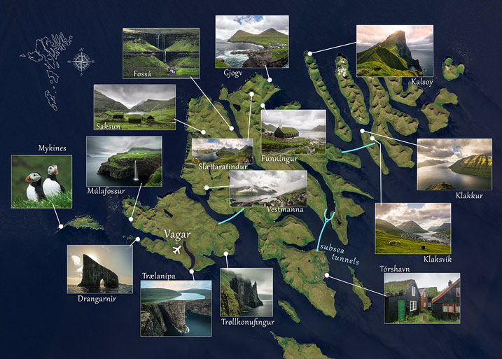

inspiration *
see photos
Why the Faroe Islands?
According to National Geographic the Faroe Islands are the world's most attractive archipelago. Their name literary means „Sheep islands“. There are more sheeps than people and nature is pristine.
The Faroe islands are located in the North Atlantic on the half way between Norway and Iceland. You can get there from Kobenhavn (Denmark) by a plane or by a ferry. On a ferry you can travel even with you car.
What to see – famous places
Sørvágsvatn (Leitisvatn) lake on the edge of Traelanípa cliff:


Gásadalur village with Mullafossur waterfall:


Mykines island with the lighthouse and Papuchalks:

Kalsoy island with the Kallur lighthouse and a cliff scenery:
Map of the Faroe Islands
There are many other places on Faroe Islands which are definitely worth seeing. See the map:
Traveling around Faroe Islands
The main islands and towns (Tórshavn, Klaksvík, Vestmanna and Vágar airport) are connected by submarine tunnels, so the most of places can be reached via road. Mykines, Kalsoy and other islands (Suðuroy, Nolsoy) can be accessed by a ferry.
The Faroe Islands are quite small, from Vágar airport in the southwest you can reach Viðareiði in the northeast in an hour and half and you will drive across all the islands connected by road.

There are regular bus lines in the Faroe Islands, which connect towns. Of course it is better to rent a car, you will see more places in less time, but the rental prices are quite expensive. There is also the possibility to arrive with your car by a ferry (Smyril Line) from Denmark.
Helicopter is cheaper than taxi!
Another experience in the Faroe Islands can be a helicopter flight, which is cheaper there than taxi! This is due to the transport accessibility of remote islands, flights are subsidized by the government. But even tourists have the opportunity to fly by. If you are interested, you can book a fligt at Transatlantic Airways. But make it as soon as possible, flights gets outsold very quickly.

James Bond on Kalsoy
There are breathtaking sceneries on Kalsoy island, so no wonder that filming of the new James bond (No time to die) took also place on Kalsoy. Due to Coronavirus, film premiere was postponed on 12th of November. Unfortunately, one can expect a huge increase in interest in Kalsoy and the Faroe Islands in general. These little islands can get easily crowded by tourists.

Where to stay
If you are planning only few days visit, the best place to stay is somewhere near the Vágar airport – in townlet Sørvágur or Sandavágur. You will be near to Gásadalur, Sørvágsvatn and Mykines.
If you have more time, you can book next accomodation in Klaksvík, which is good point to discover north part of islands. Places like Kalsoy, Gjogv and Saksun. Interesting place for stay is also Vestmanna, which is in the middle of islands and there are famous bird cliffs. The capital town Torshavn is a little bit far from main natural attractions.
Camping is allowed only in camp sites, and it isn't even permitted to spend nights in camping cars along roads.
Useful travel information
- The Faroese currency is the Faroese króna, but you won't probably need it. Credit cards are accepted almost everywhere, even at Mykines island.
- Book an accommodation or a car as soon as you can. You can get a better offer and price. Ferry to Mikynes has limited capacity.
- You can bring a drone to the Faroe Islands and fly it there, but you need to follow rules.
- To travel most of the islands, you need at least one week. But it is definitely better to have a few more spare days, because it will probably rain.
- Due to Coronavirus there are limitations when you travel to the Faroe Islands in 2020.
Weather & climate
If you like warm weather the Faroe Islands are not for you. Temperature is pretty stabil from 4°C in winter to 10 °C in summer. Due to wind, weather is changing pretty fast. On one side of mountain is sunny weather and when you drive through a tunnel, there are clouds and rain. It is not unusual, that clouds are so low that they touch the sea level.

Food & cuisine
Traditional Faroese cuisine is strongly influenced by harsh climate, it involves mainly lamb and fish meat. Some traditional faroes meals: Puffins stuffed with cake and served with potatoes, raw mutton that has been dried over a year, dried fish, whale meat and blubber.
But these meals are hard to find in menu of faroes restaurants, they usually offer a world cuisine. Even at petrol stations food has very high standard of quality - delicious meat is even in sausages.
Grindadráp tradition
As other nations hunt deer in the woods, Faroe Islanders hunt Pilot whales - it is a 1,000-Year tradition. It is important to say that Pilot whales don't suffer (death happens very quickly), hunt is non-commercial and it does not endanger the Pilot whales population.


{kind=link}
{kind=link}
{kind=link}
{kind=link}
{kind=link}
{kind=link}
{kind=link}
{kind=link}
{kind=link}
{kind=link}
{kind=link}
{kind=link}
{kind=link}
{kind=link}
{kind=link}
{kind=link}